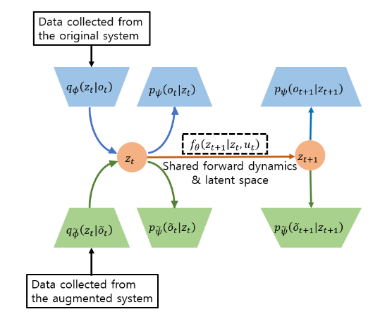
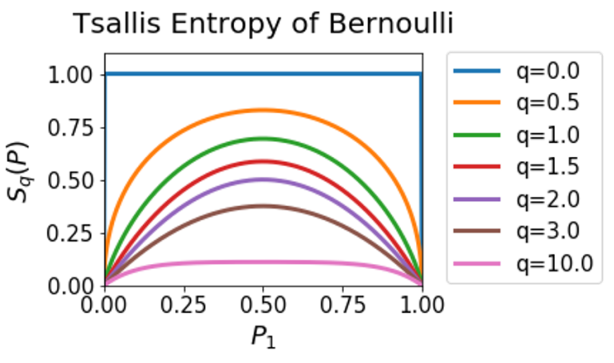
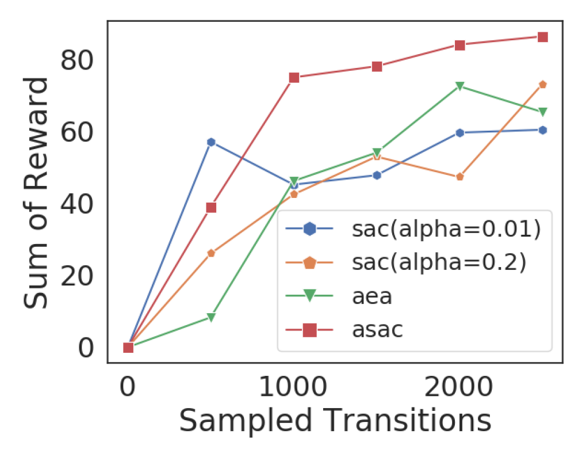
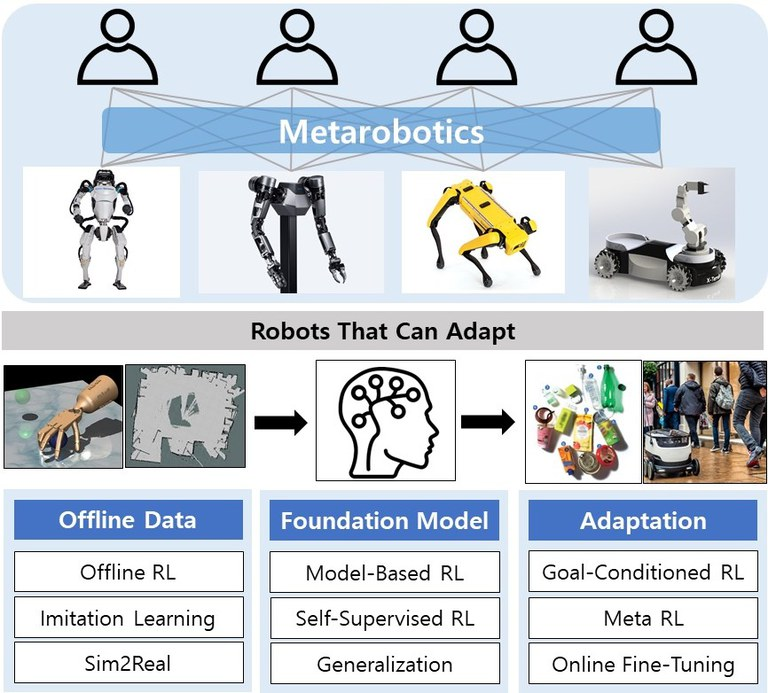
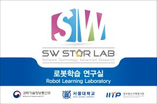
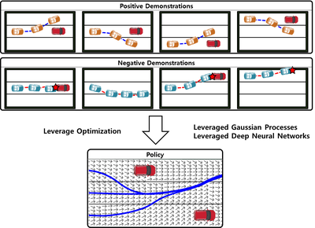

Hi! I am a Ph.D. student in the Robot Learning Laboratory (RLLAB)
at Seoul National University, advised by Songhwai Oh.
Before starting my Ph.D. course, I received a B.S. degree in Electrical and Computer Engineering from SNU in 2019.
Research Keywords: Robot Learning, Reinforcement Learning, Planning, Representation Learning
Conflict-Averse Gradient Aggregation for Constrained Multi-Objective Reinforcement Learning
Dohyeong Kim,
Mineui Hong,
Jeongho Park, and Songhwai Oh
ArXiv preprint, 2024
paper
We propose a novel policy gradient method that treats the maximization of multiple objectives as a constrained optimization,
to avoid conflicting gradients in multi-objective RL problems.
Diffused Task-Agnostic Milestone Planner Mineui Hong,
Minjae Kang, and Songhwai Oh
NeurIPS (Neural Information Processing Systems), 2023
paper
|
project page
|
code
|
video
We propose a method which predicts milestones in a latent space using a diffusion model, to guide an agent to reach a distant goal by following them.
Dynamics-Aware Metric Embedding: Metric Learning in a Latent Space for Visual Planning
Mineui Hong,
Kyungjae Lee, Minjae Kang, Wonsuhk Jung, and Songhwai Oh
RA-L (IEEE Robotics and Automation Letters), 2022
also presented in ICRA (International Coference on Robotics and Automation), 2022
paper
|
video
We propose a method to learn a latent metric space that reflects dynamical relationship between image observations,
to help an agent to plan a path to reach a distant goal.

Learning Latent Dynamics from Multi-View Observations for Image-Based Control
Mineui Hong
and Songhwai Oh
ICCAS (International Conference on Control, Automation and Systems), 2021
paper
We propose a method to learn a unified latent state space model from multi-view observations to
enhance the sample-efficiency for training a visual manipulation agent.

Generalized Tsallis Entropy Reinforcement Learning and Its Application to Soft Moblie Robots
Kyungjae Lee, Sungyub Kim, Sungbin Lim, Sungjoon Choi,
Mineui Hong,
Jae In Kim, Yong-Lae Park, and Songhwai Oh
RSS (Robotics: Science and Systems), 2020
paper
|
code
We propose a sample-efficient RL algorithm based on Tsallis entropy maximization and its application on training controller for a tripod soft moblie robot.

Learning to Walk a Tripod moblie Robot Using Nonlinear Soft Vibration Actuators
with Entropy Adaptive Reinforcement Learning
Jae In Kim*,
Mineui Hong*,
Kyungjae Lee, DongWook Kim, Yong-Lae Park, and Songhwai Oh
RA-L (IEEE Robotics and Automation Letters), 2020
also presented in ICRA (International Conference on Robotics and Automation), 2020
paper
|
code
|
video
We propose a soft moblie robot with the new type of actuator using the nonlinear stiffness characteristic of a hyperelastic material.
We also propose a novel RL algorithm that adaptively adjusts exploration-exploitation trade-off, for training a controller of the sort robot.
Research Experience

Goal-Oriented Artificial Intelligence Agents
(2022 - Present)
- Funded by Ministry of Science and ICT (MSIT)

Robot Learning: Efficient, Safe, and Socially-Acceptable Machine Learning
(2019 - Present)
- Funded by Ministry of Science and ICT (MSIT)

Robot Learning from Dmonstrations with Mixed Qualities
(2019 - 2021)
- Funded by Ministry of Science and ICT (MSIT)
Teaching Experience
Teaching Assistant
- Graduation Project (Spring 2022)
- Introduction to Intelligent Systems (Fall 2019)
Instructor
- Python Programming Tutoring in College of Natural Sciences, Seoul National University (Fall 2018)